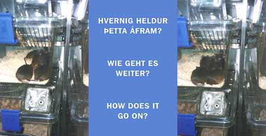

SPURNINGAR - FRAGEN - QUESTIONSZu Hlynur Hallssons Arbeit "Spurningar-Fragen-Questions" Der junge, in Island geborene, Künstler Hlynur Hallsson stellt hier auf der Web-Site des Max-Planck-Instituts eine Reihe von Photo-Text-Arrangements vor. Die irgendwo zwischen Schnappschuss und Dokumentarphoto anzusiedelnden Photos entstammen zum Teil seiner persönlichen Lebenswelt - sein schlafender Sohn Hugi oder seine Tochter Loa im Schnee - oder aus der Welt biologischer Forschung - das Institut selbst oder die fast schon sprichwörtlichen Mäuse im Käfig. Jedes Motiv taucht zweimal auf, scheinbar handelt es sich dabei um identische Aufnahmen, doch auf den zweiten Blick wird deutlich, dass sich im vermeintlich Immergleichen was verändert hat: eine kleine Bewegung, eine kaum merkliche Verschiebung des Kamerastandpunktes. So thematisiert Hlynur Hallsson bereits durch seine Photos zweierlei: 1. statt zu kopieren, zu doubeln, wenn man so will zu "klonen", führt er,wenn auch minimale, so doch bedeutungsmachende Differenzen vor. 2. der Künstler befragt die Präzision unseres Blickes, unseren Willen überhaupt noch den kleinen Unterschied WAHRzunehmen. Nun werden den Bildern zusätzlich Fragen, die hier im Internet beantwortet werden können, zur Seite gestellt. Die Fragen sind so banaler wie entscheidender Natur: "Warum sind wir hier?" steht z. B. bei dem schlafenden Hugi. Alle Fragen sind in drei Sprachen formuliert: in Isländisch - der Muttersprache des Künstlers also -, in Deutsch und in Englisch. So spricht Hlynur Hallsson hier einerseits im "technologischen Stil der Laborforschung, die an einen internationalen Markt und den Wettbewerb gebunden ist" (Michel de Certeau) und andererseits in den ganz persönlichen Sprachen seiner Familie sowie der seiner derzeitigen "Heimat" BRDeutschland. |
|
 |